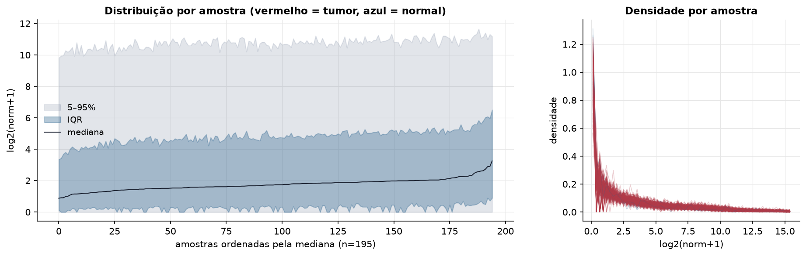
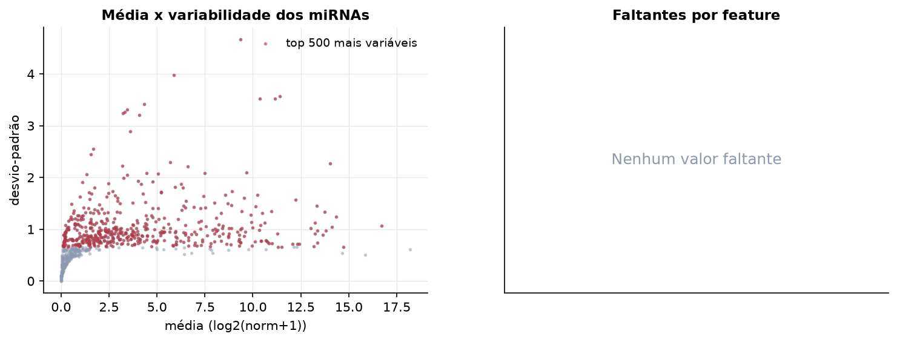
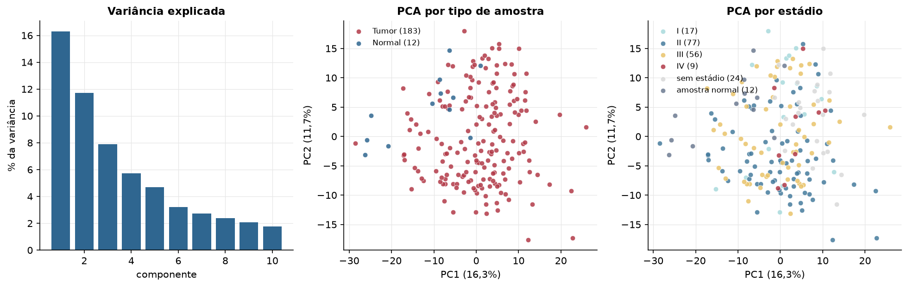
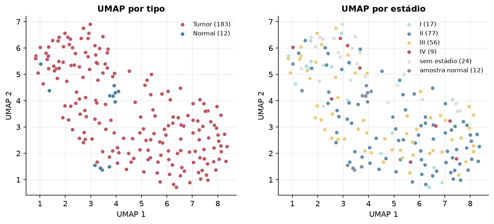
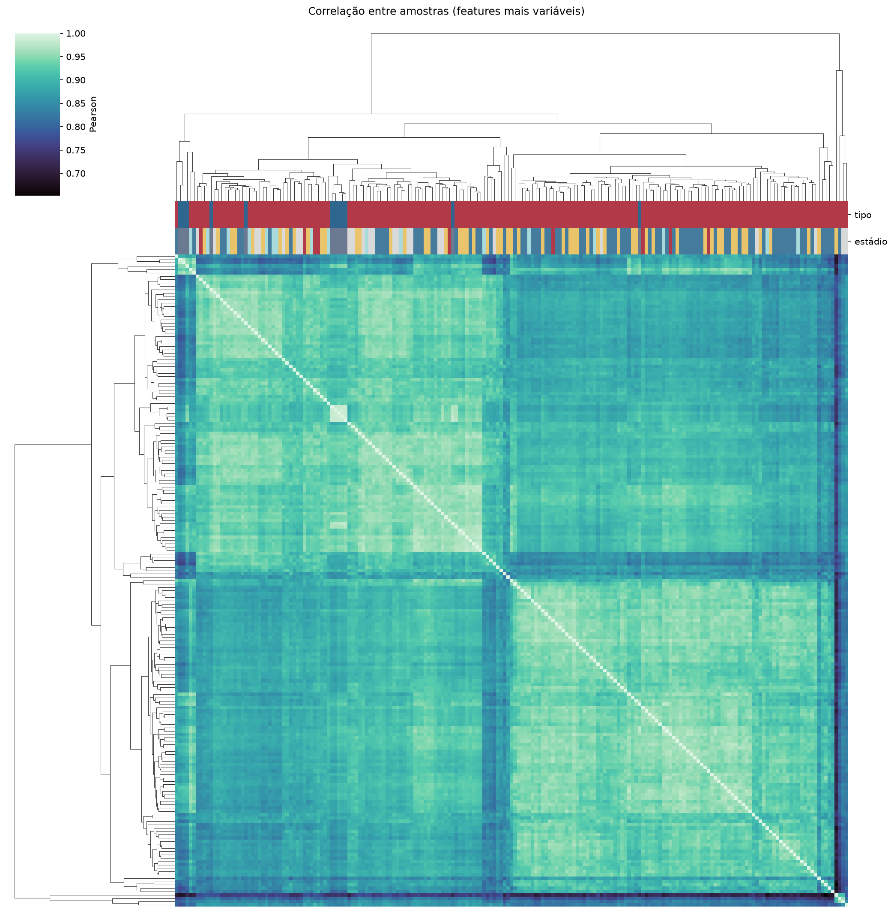
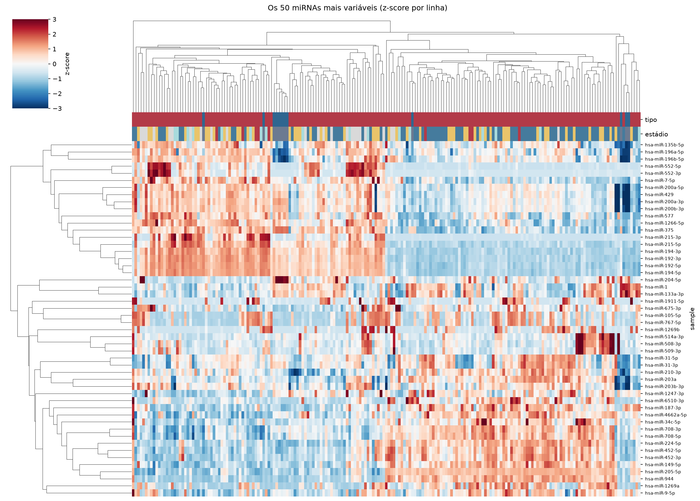
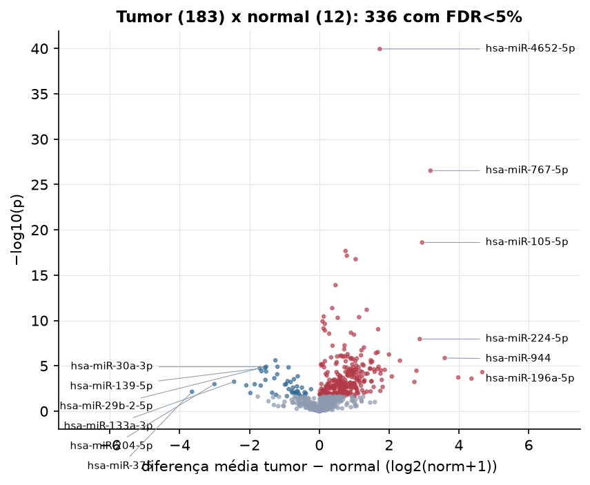
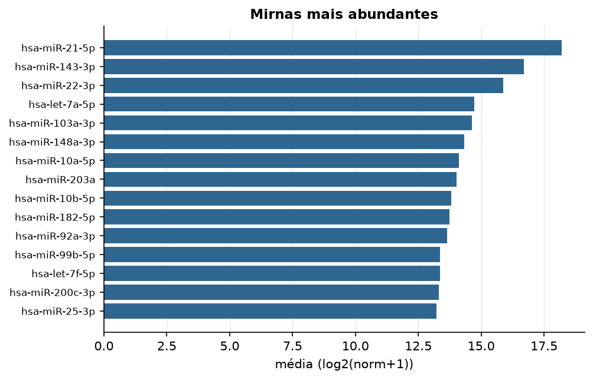

ESCA · miRNA-seq (PanCanAtlas)
miRNA maduro, normalizado e corrigido por lote (EB), log2(x+1) · gerado em 21/10/2026 21:07
743miRNAs
183amostras tumorais
12amostras normais
0,0%valores faltantes
Fonte: PanCanAtlas (pancanMiRs_EBadjOnProtocolPlatformWithoutRepsWithUnCorrectMiRs_08_04_16.xena)
Fita madura (5p/3p) já normalizada. As contagens brutas por precursor estão no relatório de contagens.
Principais resultados
- 743 miRNAs medidos em 195 amostras (183 tumorais e 12 normais); 0,0% dos valores estão faltando.
- Os dois primeiros componentes principais explicam 16,3% e 11,7% da variância das features mais variáveis.
- Correlação mediana entre amostras: 0,91.
- Amostras com correlação muito abaixo das demais (possíveis outliers técnicos): TCGA-IG-A3I8-11, TCGA-L5-A4OF-01, TCGA-R6-A6KZ-01, TCGA-R6-A8WG-01, TCGA-L5-A8NN-01.
- Tumor x normal: 336 miRNAs diferentes com FDR < 5% (292 maiores no tumor, 44 maiores no normal; 12 pacientes têm o par tumor-normal).
- Mais aumentados no tumor: hsa-miR-4652-5p, hsa-miR-767-5p, hsa-miR-105-5p, hsa-miR-767-3p, hsa-miR-548f-3p, hsa-miR-3648, hsa-miR-548d-3p, hsa-miR-6715b-3p.
- Mais reduzidos no tumor: hsa-miR-338-3p, hsa-miR-338-5p, hsa-miR-30a-3p, hsa-miR-30e-3p, hsa-miR-139-5p, hsa-miR-29b-2-5p, hsa-miR-1468-5p, hsa-miR-30a-5p.
- Associações clínicas com p < 0,05 nos componentes principais: PC2 com estádio (p=0.0049); PC2 com idade (p=9.9e-05); PC3 com idade (p=0.00062).
Distribuição dos valores


Estrutura das amostras




Tumor x normal

Features mais diferentes entre tumor e normal
| sample | diferenca_tumor_menos_normal | t | p | fdr |
|---|---|---|---|---|
| hsa-miR-4652-5p | 1.734 | 17.289 | 1.13e-40 | 8.39e-38 |
| hsa-miR-767-5p | 3.187 | 12.725 | 2.98e-27 | 1.1e-24 |
| hsa-miR-105-5p | 2.947 | 10.665 | 2.48e-19 | 6.12e-17 |
| hsa-miR-767-3p | 0.752 | 9.773 | 2.13e-18 | 3.93e-16 |
| hsa-miR-548f-3p | 0.789 | 9.586 | 7.1e-18 | 1.05e-15 |
| hsa-miR-3648 | 1.041 | 9.993 | 1.72e-17 | 2.12e-15 |
| hsa-miR-548d-3p | 0.466 | 9.361 | 1.26e-14 | 1.34e-12 |
| hsa-miR-6715b-3p | 0.369 | 7.421 | 4.29e-12 | 3.97e-10 |
| hsa-miR-1180-3p | 1.359 | 10.635 | 6.53e-12 | 5.37e-10 |
| hsa-miR-4758-3p | 0.127 | 7.049 | 3.61e-11 | 2.67e-09 |
| hsa-miR-744-3p | 1.14 | 9.246 | 4.25e-11 | 2.86e-09 |
| hsa-miR-296-3p | 0.527 | 7.34 | 5.04e-11 | 3.11e-09 |
| hsa-miR-3943 | 0.093 | 6.83 | 1.23e-10 | 7e-09 |
| hsa-miR-3667-5p | 0.159 | 6.713 | 2.34e-10 | 1.24e-08 |
| hsa-miR-499a-3p | 0.121 | 6.501 | 7.43e-10 | 3.66e-08 |
| hsa-miR-93-5p | 1.685 | 11.401 | 9.27e-10 | 4.29e-08 |
| hsa-miR-105-3p | 0.161 | 6.405 | 1.25e-09 | 5.43e-08 |
| hsa-miR-1911-5p | 0.906 | 6.456 | 2.23e-09 | 9.15e-08 |
| hsa-miR-196b-3p | 0.282 | 6.811 | 2.8e-09 | 1.09e-07 |
| hsa-miR-431-5p | 0.995 | 8.854 | 3.66e-09 | 1.35e-07 |
| hsa-miR-224-5p | 2.879 | 9.101 | 1.1e-08 | 3.88e-07 |
| hsa-miR-3687 | 0.723 | 6.234 | 5.64e-08 | 1.9e-06 |
| hsa-miR-1228-3p | 0.379 | 7.055 | 5.99e-08 | 1.93e-06 |
| hsa-miR-92a-1-5p | 1.279 | 8.471 | 9.47e-08 | 2.92e-06 |
| hsa-miR-483-5p | 0.714 | 6.224 | 1.47e-07 | 4.36e-06 |
| hsa-miR-937-3p | 1.209 | 7.946 | 1.91e-07 | 5.43e-06 |
| hsa-miR-452-3p | 1.677 | 7.365 | 3.09e-07 | 8.48e-06 |
| hsa-miR-106b-3p | 1.623 | 8.608 | 3.88e-07 | 1.03e-05 |
| hsa-miR-1293 | 0.811 | 6.347 | 5.14e-07 | 1.31e-05 |
| hsa-miR-675-3p | 1.996 | 7.033 | 5.55e-07 | 1.37e-05 |
Associação com variáveis clínicas
p-valores da associação dos três primeiros componentes principais (só tumores) com estádio (Kruskal-Wallis), sexo (Mann-Whitney), idade (Spearman) e sobrevida global (Cox univariado).
| estádio (Kruskal) | sexo (Mann-Whitney) | idade (Spearman) | sobrevida OS (Cox) | |
|---|---|---|---|---|
| PC1 (15,2%) | 0.32 | 0.478 | 0.802 | 0.076 |
| PC2 (11,9%) | 0.005 | 0.815 | 9.93e-05 | 0.808 |
| PC3 (7,9%) | 0.633 | 0.781 | 0.000616 | 0.268 |
Mais abundantes
